ВЕДОМСТВЕННЫЕ СТРОИТЕЛЬНЫЕ НОРМЫ
ВИБРАЦИОННАЯ
УКЛАДКА БЕТОНА
ПОД ВОДОЙ И ГЛИНИСТЫМ РАСТВОРОМ
ВСН 261-86
Минмонтажспецстрой СССР
МИНИСТЕРСТВО
МОНТАЖНЫХ И СПЕЦИАЛЬНЫХ
СТРОИТЕЛЬНЫХ РАБОТ СССР
МОСКВА 1987
РАЗРАБОТАНЫ Всесоюзным научно-исследовательским институтом гидромеханизации, санитарно-технических и специальных строительных работ ВНИИГС (канд. техн. наук И.Р. Арабаджян)
ВНЕСЕНЫ Главным техническим управлением Минмонтажспецстроя СССР.
ПОДГОТОВЛЕНЫ К УТВЕРЖДЕНИЮ Отделом норм и стандартов ГТУ Минмонтажспецстроя СССР.
|
Министерство монтажных и специальных строительных работ СССР (Минмонтажспецстрой СССР) |
Ведомственные строительные нормы |
ВСН 261-86 |
|
Минмонтажспецстрой СССР |
||
|
Вибрационная укладка бетона под водой и глинистым раствором |
Взамен ВСН 261-77 |
|
|
Минмонтажспецстрой СССР |
1. ОБЛАСТЬ ПРИМЕНЕНИЯ
1.1. Настоящие ВСН распространяются на проектирование и производство работ способом ВПТ по заполнению полости свай-оболочек диаметром до 250 см и бетонированию тонкостенных подземных сооружений в узких траншеях, возводимых методом «стена в грунте» (резервуары, колодцы, галереи и переходы, набивные сваи, фундаменты, опоры глубокого заложения и т.п.) в гидротехническом промышленном и гражданском строительстве.
1.2. Вибрационную укладку бетона способом РПТ допускается производить в пресных и минерализованных водах и глинистых растворах, приготовляемых как на бентонитовых глинах, так и на смеси бентонитовых и местных жирных пластичных глин, согласно СНиП 3.02.01-83.
1.3. Минимальный поперечный размер траншеи (диаметр сваи, сваи-оболочки) должен составлять: при наличии арматурного каркаса - 60 см, при его отсутствии - 40 см.
1.4. Бетонирование вибрационным способом допускается производить на глубине до 50 м. Возможность бетонирования на больших глубинах необходимо проверять экспериментально.
1.5. Максимальный радиус распространения бетонной смеси при вибрационной укладке под водой составляет 2,5 м, а под глинистым раствором - 3,0 м.
1.6. Вибрационную укладку бетона допускается производить при температуре воздуха до минус 20 °С.
2. МАТЕРИАЛЫ ДЛЯ ПРИГОТОВЛЕНИЯ БЕТОННОЙ СМЕСИ
2.1. Для приготовления бетонной смеси должны быть использованы следующие материалы:
а) портландцемент, шлакоподтландцемент (ГОСТ 10178-85, сульфатостойкий портландцемент, пуццолановый портландцемент (ГОСТ 22266-78), напрягающий портландцемент НЦ-10 с пониженной энергией самонапряжения (ТУ 21-20-18-83) марок не ниже 400;
|
Внесены Главным техническим управлением Минмонтажспецстроя СССР |
УТВЕРЖДЕНЫ
Минмонтажспецстроем СССР |
Срок введения
в действие |
б) гравий для строительных работ фракций 5-10; 5-20 или 6-40 мм, удовлетворяющий требованиям ГОСТ 8268-82;
в) щебень из естественного камня или гравия фракций 5-10; 5-20 или 5-40 мм, удовлетворяющий требованиям ГОСТ 8267-82 или ГОСТ 10260-82;
г) песок природный или искусственные смеси песка, удовлетворяющие требованиям ГОСТ 10268-80 и ГОСТ 8736-77*, с модулем крупности Мд = 1,6 - 3,0, кривые гранулометрического состава которых проходят в верхней части области песков, рекомендованных для приготовления гидротехнического бетона (черт. 1). Содержание фракций меньше 0,3 мм должно быть не менее 15 %;
Гранулометрический состав песков для приготовления бетонной смеси подводной укладки
Условные обозначения: 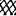 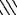
Черт. 1
д) пластифицирующая гидрофилизующая добавка СДБ (сульфитно-дрожжевая бражка) ОСТ 81-79-74 или другая в соответствии с «Руководством по применению химических добавок в бетоне» (М.: Стройиздат, 1960) (приложение 1, обязательное);
е) пластифицирующая гидрофобизующая добавка СНВ (смола нейтрализованная воздухововлекающая), изготовляемая в соответствии с ТУ 81-05-7-74 (см. приложение 1, обязательное). В качестве гидрофобизующих добавок могут быть также использованы мылонафт (ГОСТ 13302-77), СПД (синтетическая поверхностная добавка ТУ 38-101253-77), ЦНИПС-1 (омыленный древесный пек ТУ 81-05-16-76), СДО (смола древесная омыленная ТУ 81-05-2-78) и др.;
ж) суперпластификатор С-3 (разжижающая добавка), соответствующая требованиям ТУ 14-6-188-81 (см. приложение 1, обязательное).
Дозировка поверхностно-активных добавок приведена в таблице.
Пределы дозировок поверхностно-активных веществ
|
Добавка |
Количество вводимых добавок, % (от массы цемента) |
|
СДБ (сульфитно-дрожжевая бражка) |
0,1-0,25 |
|
СНВ (смола нейтрализованная воздухововлекающая) |
0,005-0,035 |
|
МI (мылонафт) |
0,1-0,2 |
|
СПД (синтетическая поверхностная добавка) |
0,005-0,035 |
|
ЦНИПС-1 (омыленный древесный пек) |
0,005-0,035 |
|
СДО (смола древесная омыленная) |
0,005-0,035 |
|
ГКЖ-10, ГМ-11 (кремнеорганические жидкости) |
0,05-0,15 |
|
С-3 (суперпластификатор) |
0,2-1,2 |
2.2. Вид вяжущего и его состав определяются в зависимости от условий эксплуатации сооружения и агрессивности среды согласно ГОСТ 23464-76.
2.3. Максимальный размер зерен крупного заполнителя в бетонной смеси не должен превышать 1/3 наименьшего размера конструкций, а в армированных конструкциях - 3/4 наименьшего расстояния в свету между стержнями арматуры, но не более 40 мм.
3. ОБЩИЕ УКАЗАНИЯ ПО ПОДБОРУ СОСТАВОВ БЕТОННОЙ СМЕСИ
а) жесткость по стандартной методике (ГОСТ 10181.1-81) 5-7 с;
б) время прохождения 80 см лотка при вибрировании не более 40 с;
в) осадку конуса на гравии 0 - 3 см, на щебне - 3 - 6 см.
3.3. Все подобранные смеси не должны расслаиваться при вибрировании (приложение 2, рекомендуемое).
3.4. Приготовление бетонных смесей для бетонирования под водой и глинистым раствором без введения пластифицирующих добавок не допускается.
3.5. Состав бетонной смеси для бетонирования способом ВПТ с вибрированием под водой и глинистым раствором рекомендуется подбирать в следующем порядке (пример расчета см. в приложении 3, рекомендуемом):
а) определяются плотность и объемная масса заполнителей, их гранулометрические составы, модуль крупности песка и удельные поверхности заполнителей (приложение 4, рекомендуемое);
б) назначаются в соответствии с проектом марка бетона по прочности и водонепроницаемости, а также марка используемого цемента;
в) устанавливается оптимальное содержание песка в смеси заполнителей;
г) определяется водоцементное отношение, обеспечивающее заданную прочность бетона;
д) проводятся опытные затворения бетонной смеси с определением осадки конуса, жесткости по стандартной методике и текучести по лотку при вибрировании;
е) дается окончательный, откорректированный состав бетонной смеси и закладываются образцы для испытания их на прочность при сжатии, растяжении (раскалыванием) и водонепроницаемость на 28; 90 и 180 сут. твердения согласно ГОСТ 10180-78 и ГОСТ 12730.5-84.
3.6. Бетонные смеси на щебне должны готовиться на песке с Мк = 1,6 - 2,2, а при использовании в качестве заполнителя гравия - с Мк = 2,2 - 3,0.
3.7. При отсутствии песка с Мк = 1,6 - 2,2 для приготовления бетонной смеси на щебне могут быть использованы более крупные пески с модулем крупности до 3,0. Осадка стандартного конуса смеси в этом случае должна быть повышена до 7 - 9 см, что достигается некоторым увеличением расхода цемента на 1 м3 приготовляемой смеси. Для этого при расчете состава бетонной смеси (см. приложение 3, рекомендуемое) осредненную толщину прослоек цементного теста между зернами заполнителей следует принимать равной 15 мкм.
3.9. В случае приготовления смесей на гравии в качестве пластифицирующей добавки вводят только 0,1 - 0,25 % СДБ от массы цемента (в зависимости от вида цемента, минералогического состава клинкера, тонкости помола и т.п.).
3.10. Характеристики бетонной смеси определяются по осадке стандартного конуса, жесткости (ГОСТ 10181.1-81) и текучести в специальном лотке. Лоток 1 (черт. 2) на одном конце имеет приемный бункер 2.
Лоток для определения текучести смеси при вибрировании
Черт. 2
Сверху лоток перекрывается оргстеклом, через которое ведутся наблюдения за продвижением бетонной смеси. Для определения текучести бункер заполняют бетонной смесью и погружают в нее работающий вибратор ИВ-112 с гибким валом или ИВ-47Б (с большим наконечником), который держат на весу, не касаясь дна. Под действием вибрации смесь разжижается и начинает продвигаться по лотку. За показатель текучести принимается время прохождения смесью 80 см лотка (см. п. 3.1, б).
Бункер в процессе вибрирования заполняют смесью. Отсчет ведется с момента начала вибрирования.
3.11. Выбор состава бетонной смеси для укладки под водой и глинистым раствором рекомендуется проводить по методике А.А. Шадрина, дополненной определением текучести по лотку при вибрировании (приложение 5, рекомендуемое).
3.12. Для придания смеси высокой подвижности, а также повышения прочности и водонепроницаемости бетона в смеси рекомендуется вводить суперпластификатор С-3 в соответствии с «Рекомендациями по применению суперпластификатора С-3 в бетоне» (М.: НИИЖБ, 1979).
3.13. Суперпластификатор С-3 вводится в бетонную смесь с водой затворения в количестве 0,2 - 1,2 % от массы цемента в пересчете на сухое вещество. Окончательный состав бетона устанавливается строительной лабораторией.
3.14. Не допускается введение суперпластификатора в пластифицированные и гидрофобные цементы (ГОСТ 10178-85).
3.15. С целью снижения усадочных деформаций и обеспечения более плотной структуры бетона в качестве вяжущего следует использовать напрягающий цемент НЦ-10. Особенно эффективен НЦ-10 в сочетании с суперпластификатором С-3.
4. ПРИГОТОВЛЕНИЕ БЕТОННОЙ СМЕСИ
4.1. Приготовление бетонной смеси для бетонирования под водой и глинистым раствором должно производиться в бетономешалках принудительного перемешивания.
4.2. В случаях их отсутствия допускается использование гравитационных смесителей, однако продолжительность перемешивания при этом должна быть увеличена вдвое по сравнению с указанным в СНиП III-15-76.
4.3. Загрузку материалов в бетономешалки принудительного перемешивания производят в следующем порядке: вначале во вращающуюся чашу загружают песок, затем щебень (гравий) и смесь перемешивают с постепенным добавлением цемента и воды, содержащей пластифицирующие добавки (см. п. 3.8).
4.4. Время перемешивания в бетономешалке принудительного действия составляющих умеренно жестких и малоподвижных бетонных смесей устанавливает строительная лаборатория опытным путем и указывает его в выдаваемом на бетонный завод составе бетонной смеси.
4.5. Допускаются приготовление и доставка смеси в автобетоносмесителях (приложение 6, рекомендуемое).
4.6. В бетонные смеси на гравии пластифицирующую добавку СДБ вводят с водой затворения.
4.7. В бетонную смесь на щебне и мелком песке (Мк = 1,6 - 2,2) вводят две пластифицирующие добавки - гидрофилизующую СДБ и гидрофобизующую СНВ (или другие добавки, см. таблицу). Вначале с 2/3 воды вводят СДБ, а затем, по достижении смесью однородности, с оставшимся количеством воды СНВ. Одновременное введение обеих добавок не допускается.
4.8. Количество вводимых добавок должно проверяться в каждом конкретном случае экспериментальным путем.
4.9. Отбор проб бетонной смеси для определения характеристик должен производиться в соответствии с ГОСТ 10181.1-81 и ГОСТ 10180-78.
5. ОБОРУДОВАНИЕ
5.1. Оборудование для бетонирования бетонными смесями способом ВПТ с вибрированием включает:
а) металлические трубы для подачи бетона под воду;
б) загрузочную воронку на трубе;
в) приспособления для изоляции бетонной смеси от воды при первоначальном заполнении трубы;
г) вибраторы, закрепляемые на трубе;
д) высокочастотные преобразователи электроэнергии для питания вибраторов;
е) приспособления и механизмы (приложение 7, рекомендуемое) для подвешивания, подъема и опускания труб и подмостей для размещения оборудования и персонала;
ж) специальный кондуктор для фиксирования положения бетонолитных труб в плане и по вертикали (черт. 3);
з) устройство для транспортирования бетонной смеси к трубам.
5.2. Для подачи бетонных смесей под воду следует использовать цельнотянутые или электросварные (прямошовные) металлические трубы диаметрами 200 - 300 мм с толщиной стенок 6 - 10 мм, без вмятин и наплывов, которые могут создать сопротивление движению бетонной смеси. Трубы должны быть водонепроницаемыми в стыках, обладать достаточными прочностью и жесткостью.
5.3. Бетонолитную трубу (черт. 4) собирают из отдельных звеньев длиной 2 - 5 м. Общая длина трубы должна быть равна высоте бетонируемого слоя.
Конструктивный вариант кондуктора для фиксирования положения бетонолитных труб
Черт. 3
Бетонолитная труба в сборе
1 - приемная воронка;
2 - вибратор ИВ-60 (С-825)
Черт. 4
В случаях, когда поверхность блока (сооружения) находится ниже уровня воды, длина трубы должна быть равна глубине бетонирования.
5.4. Если по условиям производства работ возможен подъем трубы и питающего устройства на высоту, равную толщине бетонируемого слоя, то бетонолитные трубы могут изготовляться без звеньев.
5.5. Соединение отдельных звеньев труб должно быть плотным и водонепроницаемым. В качестве прокладок следует использовать листовую резину или паронит толщиной 4 - 6 мм.
5.6. Бетонолитная труба может быть также собрана из звеньев на быстроразъемных соединениях (черт. 5 и 6). Фиксация положения клина на стягивающем хомуте должна осуществляться с помощью проволоки диаметрами 7 - 8 мм, продеваемой в отверстие на клине.
5.7. Для заполнения труб бетоном служит металлическая приемная воронка (черт. 7), оборудованная площадками, необходимыми для открывания затвора подаваемой бадьи с бетоном и наблюдения за процессом его подачи. Объем приемной воронки должен быть не менее 1,5 объема бетонолитной трубы.
Быстроразъемное соединение звеньев бетонолитной трубы
1 - шплинт; 2 - отверстие диаметром 8 мм под шплинт
Черт. 5
Схема секций сборной бетонолитной трубы конструкции треста Укргидроспецфундаментстрой
1 - нижний конец секции; 2 - щека; 3 - палец; 4 - направляющая планка; 5 - защелка; 6 - раструб; 7 - верхний конец секции; 8 - цапфа; 9 - фиксирующий ползун
Черт. 6
Конструктивный вариант приемной воронки объемом 2,0 м3
а - с площадкой с одной стороны: 1 - скобы; 2 - арматура периодического профиля; б - с круговой площадкой: 1 - петля; 2 - скоба; 3 - арматура периодического профиля через 50 см
Черт. 7
5.8. Фиксация вертикального положения бетонолитной трубы в процессе заполнения приемной воронки бетонной смесью или монтажно-демонтажных работ может производиться с помощью скоб из гладкой арматурной стали диаметрами 22 - 26 мм, привариваемых к верхней части звеньев трубы (черт. 8), или специального захвата, на который должен опираться верхний фланец звена.
Фиксирующие устройства на бетонолитной трубе
1 - скобы для фиксации вертикального положения трубы; 2 - направляющие скобы
Черт. 8
5.9. К концевому (нижнему) звену бетонолитной трубы с помощью специальных приспособлений жестко крепятся вибраторы (вибратор), предназначенные для облегчения распространения бетона в блоке и его уплотнения.
5.10. Бетонолитную трубу диаметрами 200 - 300 мм, длиной до 10 м снабжают одним вибратором мощностью 0,6 - 0,8 кВт. При глубине до 20 м суммарная мощность вибраторов должна составлять 1 - 1,5 кВт (черт. 9, а).
Конструктивный вариант жесткого крепления вибратора ИВ-60 (С-826) к бетонолитной трубе
а - при глубине бетонирования до 20 м; б - при глубине бетонирования 20-50 м; 1 - бетонолитная труба; 2 - подкладка; 3 - вкладыш диам. 50 мм и h=50 мм; 4 - накладка; 5 - натяжной болт; 6 - отверстие под шплинт; 7 - вибратор
Черт. 9
5.11. При длине бетонолитной трубы 20 - 50 м к нижнему концу ее должны закрепляться вибраторы общей мощностью 2 - 2,5 кВт (см. черт. 9, б). Обязательным условием при этом должно быть вращение роторов электродвигателей обоих вибраторов в одну сторону. Направление вращения ротора вибратора определяется при запуске по реактивному моменту свободно стоящего вибратора.
Конструкция для предотвращения попадания воды в вибратор
1 - шайба; 2 - резиновая прокладка; 3 - кабель КРПТ 3×10; 4 - накидная гайка; 5 - труба диаметром 1"; 6 - битум; 7 - фланец; 8 - асбест
Черт. 10
5.12. Вибраторы к бетонолитной трубе крепят болтами, которые следует шплинтовать мягкой (отожженной) проволокой диаметрами 7 - 8 мм, пропуская ее через отверстия, высверленные в их головках.
5.13. Для предотвращения смещения бетонолитной трубы при бетонировании свай-оболочек и зацепления выступающих частей трубы за арматурный каркас в средней части каждого звена трубы, вблизи места закрепления вибраторов, должны устраиваться направляющие скобы (см. черт. 8).
5.14. В качестве вибровозбудителей следует использовать глубинные электромеханические дебалансные вибраторы для уплотнения бетона (вибробулавы) ИВ-59, ИВ-60, ИВ-102, ИВ-103 (приложение 8, обязательное).
5.15. Для раздельного управления вибраторами электроэнергию к каждому из них подводят отдельным кабелем. Для предупреждения повреждения электрокабеля в месте присоединения его к вибратору и предотвращения попадания воды в вибратор необходимо устройство специального ввода из труб, заливаемых битумом (черт. 10).
5.16. Источником питания вибраторов должны служить высокочастотные преобразователи тока И-75В (приложение 9, обязательное). От одного преобразователя может получать питание только один вибратор. Присоединение двух вибраторов к одному преобразователю не допускается.
5.17. При длине кабеля до 50 м и сечении 10 мм2 питание одного вибратора ИВ-60 должно осуществляться от двух преобразователей И-75В, соединяемых параллельно (приложение 10, обязательное). При использовании в аналогичных случаях вибраторов мощностью до 0,8 кВт (например ИВ-59, ИВ-102 или ИВ-103) питание каждого из них должно осуществляться от одного преобразователя И-75В.
5.18. Для подъема и опускания бетонолитных труб могут применяться грузоподъемные устройства, обеспечивающие точность выполнения операций до 10 см. Грузоподъемность указанных механизмов должна соответствовать массе труб с приемной воронкой, заполненных бетоном, увеличенной на 25 % для преодоления сил трения, которые возникают при извлечении трубы из уложенного бетона.
5.19. Для предохранения смеси от соприкосновения с водой в начальный период заполнения труб бетонной смесью следует использовать скользящие пробки: мягкие пробки из мешковины и пакли, мешки с опилками или надувные устройства. При укладке бетона в грунтовые разработки, пробуренные в скальной породе, вместо мягких рекомендуется использовать стальные скользящие пробки (черт. 11).
Стальная скользящая пробка (а) и схема ее установки (б)
1 - листовая резина; 2 - направляющие дужки; 3 - подвес пробки; 4 - бетон; 5 - пробка (L - глубина установки пробки не менее диаметра трубы)
Черт. 11.
Схема устройства донного клапана конструкции треста Гидроспецфундаментстрой
1 - трос диаметром 5-11 мм; 2 - веревка диаметром 4-8 мм; 3 - резиновая прокладка; 4 - прижимная шайба
Черт. 12
5.20. При глубине бетонирования до 10 м могут применяться донные клапаны, шарнирно закрепляемые на бетонолитной трубе (черт. 12). В этих случаях количество бетона первой порции (см. п. 6.3) для образования холмика в основании, предотвращающего прорыв воды (глинистого раствора) в трубу, должно быть не менее 1,5 объема бетонолитной трубы.
5.21. Бетонную смесь к приемной воронке бетонолитной трубы можно подавать бадьями, специальными подъемниками (скипами), ленточными транспортерами и т.д.
6. ПРОИЗВОДСТВО РАБОТ
6.1. До начала бетонирования проверяют герметичность соединений звеньев бетонолитной трубы, надежность крепления вибраторов и герметичность вводов электрокабеля. Электросистемы проверяют путем пуска вибраторов.
При бетонировании траншеи под глинистым раствором на захватку устанавливают специальный кондуктор, фиксирующий положение бетонолитных труб (черт. 13).
6.2. Перед бетонированием бетонолитную трубу устанавливают на основание, а в горловину приемной воронки подвешивают скользящую пробку на глубину не менее одного диаметра трубы (черт. 14).
6.3. Бетонирование начинают с загрузки воронки бетонной смесью рекомендованного состава (см. пп. 3.1 и 3.2), количество которой должно составлять не менее 1,2 объема бетонолитной трубы. После этого трубу поднимают на 3 - 5 см и перерезают веревку (или тросик), удерживающую скользящую пробку. Имея перед собой скользящую пробку, бетонная смесь устремляется вниз и вытесняет из трубы через нижнее отверстие воду и воздух.
6.4. После того как бетонная смесь заполнит трубу и движение смеси приостановится, бетонолитную трубу приподнимают на высоту 20 - 30 см для выпуска скользящей пробки. Как только пробка выйдет из трубы, поступающий бетон образует у ее основания холмик.
6.5. Когда уровень бетонной смеси в приемной воронке понизится и достигнет устья бетонолитной трубы, ее опускают на основание. Затем приемную воронку вновь заполняют бетонной смесью, включают вибратор и медленно поднимают бетонолитную трубу на 20 - 25 см над забоем.
6.6. При бетонировании траншеи под глинистым раствором первые порции бетонной смеси можно подавать одной или несколькими трубами одновременно. Подачу несколькими трубами следует производить, когда расстояние между ними превышает радиус распространения бетонной смеси (радиус действия трубы), но не более чем в 2 раза.
6.7. При подаче бетонной смеси одной трубой включение в работу второй трубы следует производить только после того, как бетонная смесь, подаваемая первой трубой, перекроет на 10 - 20 см нижний конец второй трубы (см. черт. 13). Вслед за этим бетонирование должно осуществляться попеременно двумя трубами.
Схема бетонирования захватки длиной 8 м двумя бетонолитными трубами
1 - траншея; 2 - кондуктор; 3 - бетонолитные трубы; 4 - глинистый раствор; 5 - вибраторы; 6 - бетон
Черт. 13
6.8. Вначале поступление бетонной смеси по трубе несколько замедленно. С поднятием уровня укладываемого бетона он попадает в зону действия вибратора, и интенсивность его подачи возрастает, достигая расчетной:
а) при трубе диаметром 200 мм с вибратором ИВ-60 - 4,5-6,0 м3/ч;
б) при трубе диаметром 300 мм с тем же вибратором - 10-11 м3/ч.
Последовательность операций при бетонировании свай-оболочек бетонной смесью с вибрированием
I - установка на забой бетонолитной трубы с подвешенной скользящей пробкой: 1 - подвес пробки; 2 - стальная скользящая пробка; 3 - вибратор; II - заполнение приемной воронки бетонной смесью; III - пропуск первой порции бетона - труба поднята над забоем; IV - заполнение приемной воронки второй и последующими порциями бетона; V - процесс бетонирования - труба приподнята на высоту подъема гака стрелы крана; VI - бетонирование после изъятия секции трубы
Черт. 14
6.9. Когда уровень бетонной смеси над забоем (дном) достигнет высоты 1,25 - 1,50 м, бетонолитную трубу начинают поднимать, но с таким расчетом, чтобы рабочее заглубление ее в бетон в процессе бетонирования составляло не менее 0,75 - 1,0 м. После поднятия трубы на длину звена (или звеньев, в зависимости от высоты подъема крюка грузоподъемного устройства) бетонирование приостанавливают, а съемное звено (или звенья) удаляют.
6.11. После перерывов, связанных с загрузкой приемной воронки, включают вибратор и приподнимают бетонолитную трубу на 0,5 - 0,6 м. При этом движение бетонной смеси восстанавливается.
6.12. Новую порцию бетона загружают в приемную воронку после того, как уровень бетонной смеси в ней достигнет горловины бетонолитной трубы.
6.13. В случаях, когда при бетонировании уровень бетонной смеси в трубе опускается ниже ее горловины, следующую порцию бетона необходимо загружать в приемную воронку небольшими частями для заполнения в первую очередь бетонолитной трубы. При интенсивной загрузке бетонная смесь перекрывает горловину трубы с образованием воздушной пробки, препятствующей поступлению смеси в бетонолитную трубу.
6.14. При бетонировании на больших глубинах (20 - 50 м) возможен выход из строя одного из вибраторов на нижнем конце трубы. Бетонирование в этих случаях следует продолжать, несмотря на некоторое снижение интенсивности подачи смеси в блок.
6.15. Уровень укладываемого бетона измеряют с помощью футштока с упорной площадкой на конце. При значительных глубинах для этой цели используют трос с нанесенными на нем делениями и грузом на конце (лот).
6.16. Для контроля за положением бетонолитной трубы на ней, начиная от нижнего обреза, несмываемой краской наносят деления через каждые 50 см.
6.17. Если по производственным условиям требуется остановить бетонирование, то для этого достаточно выключить вибраторы и несколько заглубить трубу. Транспортирование смеси по трубе при этом прекращается.
6.18. Время необходимой или вынужденной остановки составляет 1,0 - 1,5 ч, в течение которых бетонная смесь не теряет своих качеств. Более точно допустимое время остановки устанавливается строительной лабораторией.
6.19. В случаях, когда время остановки превышает 1,0 - 1,5 ч, бетонирование может быть продолжено, если установлено следующее:
а) бетонолитная труба (без поддержки) медленно погружается в уложенную смесь при включении вибраторов;
б) бетонная смесь поступает при включенных вибраторах из бетонолитной трубы в блок при рабочем заглублении ее в уложенную смесь (см. п. 6.10). В других случаях бетонирование возобновляют после выполнения работ, указанных в п. 6.25.
6.20. Если по производственным условиям время на доставку бетонной смеси к месту укладки составляет 1,0 - 1,5 ч, то при приготовлении смеси ее жесткость должна быть порядка 2 - 4 с. Это достигается в основном путем увеличения количества вводимых добавок. Жесткость смеси определяется строительной лабораторией.
6.21. Звенья бетонолитной трубы следует удалять при выключенных вибраторах. Уровень смеси в трубе при этом должен быть ниже отметки разбалчиваемого (разнимаемого) фланца.
6.23. По достижении верхним слоем бетона отметки, указанной в п. 6.22, бетонолитную трубу с работающим вибратором медленно извлекают из бетона.
6.24. Максимальный радиус распространения бетонной смеси при укладке ее под водой с помощью вибрирования (радиус действия трубы) составляет 2,5 м, а под глинистым раствором - 3,0 м.
6.26. Удаление с поверхности подводной кладки шлама и слоя слабого бетона осуществляется водолазами с помощью пневматического инструмента. При невозможности выполнения работ водолазами слой слабого бетона раздробляют долотом и удаляют с помощью эрлифта.
6.27. При бетонировании в зимних условиях температура бетонной смеси при подаче ее в приемную воронку должна быть не менее 5 °С.
6.28. После бетонирования бетонолитные трубы необходимо тщательно промыть водой.
7. КОНТРОЛЬ ЗА ПОДВОДНЫМ БЕТОНИРОВАНИЕМ
7.1. В процессе подводного бетонирования и после его окончания подлежат обязательному контролю:
а) качество бетонной смеси и ее составляющих;
б) режим подводного бетонирования;
в) качество бетонной кладки.
7.2. При проверке качества бетона следует:
1) наблюдать за соответствием характеристик применяемых материалов требованиям настоящих ВСН и установленным составом бетона;
2) наблюдать за правильностью дозирования материалов при приготовлении бетона;
3) отбирать и испытывать пробы бетона.
7.3. Отбор проб для определения характеристик бетонной смеси (см. пп. 3.1 и 3.2) и изготовления контрольных образцов следует производить на бетонном заводе и из приемной воронки бетонолитной трубы с соблюдением положений, изложенных в СНиП III-15-76, и в соответствии с требованиями ГОСТ 10181.1-81 и ГОСТ 10180-78.
7.4. Контрольные образцы изготовляют размерами 150×150×150 мм в количестве 9 шт. для испытаний через 28, 90 и 180 сут. твердения. Хранение образцов - водное, в непосредственной близости от массива уложенного бетона.
7.5. Прочность бетона, уложенного вибрационным способом под водой или глинистым раствором, определяют как произведение результатов испытаний контрольных кубов по ГОСТ 10180-78 на коэффициент К=1,4.
7.6. При контроле режима подводного бетонирования проверяют:
а) интенсивность бетонирования - по объему укладываемого бетона, выданного бетонным заводом. В процессе бетонирования необходимо наблюдать за перемещением бетонной смеси в приемной воронке бетонолитной трубы;
б) состояние поверхности подводного бетона - периодическими водолазными осмотрами;
в) заглубление трубы в бетон - сравнением отсчетов по делениям на трубе с уровнем бетонной смеси у труб, определяемым с помощью лота или футштока.
7.7. Качество бетона подводной кладки, уложенного способом ВПТ с вибрированием, следует оценивать по результатам испытания выбуренных кернов.
7.8. Образцы из бетонной кладки для испытаний выбуриваются механическим колонковым бурением с изъятием кернов диаметром 150 мм (6").
7.9. Выбуренные керны следует испытывать согласно «Рекомендациям по оценке качества бетона гидротехнических сооружений по кернам» ВСН 008-67/МЭиЭ СССР.
8. ТЕХНИКА БЕЗОПАСНОСТИ ПРИ ПОДВОДНОМ БЕТОНИРОВАНИИ
8.1. При производстве работ по вибрационной укладке бетонных смесей под водой должны выполняться требования по технике безопасности, изложенные в СНиП III-4-80, а также в ВСН 110-64 «Технические указания по проектированию и строительству фундаментов и опор мостов из сборных железобетонных оболочек» (ГПК Трансстроя СССР, 1965).
8.2. У приемных воронок должны устраиваться площадки с перилами высотой не менее 1 м для размещения рабочих, принимающих бетон и наблюдающих за перемещением бетонной смеси в приемной воронке бетонолитной трубы.
8.3. Выгрузка бетонной смеси из бадьи в приемную воронку должна производиться с высоты не более 1 м.
8.4. Не допускается выгружать бетон из бадьи в приемную воронку, если нижний край воронки возвышается над грунтом (верхним краем сваи-оболочки) более чем на 1 м.
8.5. Под руководством сменного мастера должны осуществляться монтаж и установка бетонолитных труб, строповка и установка арматурного каркаса.
8.6. При выполнении водолазных работ необходимо соблюдать требования специальных инструкций, а также правила охраны труда и техники безопасности. Ответственность за выполнение этих инструкций и правил возлагается на старшину водолазной станции. Производитель работ, в распоряжении которого находится станция, обязан принять меры по обеспечению техники безопасности подводно-технических работ.
Приложение 1
Обязательное
ПРИМЕР ОПРЕДЕЛЕНИЯ ОПТИМАЛЬНОЙ ДОЗИРОВКИ СДБ
Состав 1 м3 бетонной смеси (в кг):
Цемент ........................ 330
щебень ........................ 1270
песок ........................... 600
вода ............................. 178
осадка конуса АзНИИ 4-5 см, В/Ц=0,54.
Для определения оптимального количества СДБ делают замесы с добавкой 0,10, 0,15 и 0,20 % СДБ от массы цемента.
Предположим, что СДБ вводится в виде 10 %-ного раствора, расход которого определяют по табл. 1 (верхняя строка).
На 1 м бетона потребуется при содержании СДБ (в л):
0,10 % ...................... 330×0,01×0,960 = 3,17
0,15 % ...................... 330×0,01×1,440 = 4,75
0,20 % ...................... 330×0,01×1,920 = 6,33
Для сохранения принятого В/Ц соответственно уменьшают расход воды:
178 - 3,17 = 175 л и т.д.
Оптимальной считается такая дозировка СДБ, при которой заданная осадка конуса 4 - 5 см достигается при наименьшем расходе воды на 1 м3 бетонной смеси. При этом прочность бетона в установленный срок должна быть не менее прочности бетона без добавок.
Предположим, что в результате испытания изготовленных из пробных замесов контрольных кубов получены следующие данные:
Содержание СДБ, % Расход воды, л/м3 R28, МПа
0 178 30,0
0,10 175 30,4
0,15 173 29,5
0,20 172 29,8
Из этих результатов видно, что оптимальной является добавка в количестве 0,20 % СДБ. Аналогично ведется расчет и при введении воздухововлекающих добавок.
При введении гидрофобизующей добавки СНВ (табл. 2) возможно незначительное снижение прочности бетона. Однако оно может быть компенсировано за счет снижения В/Ц вследствие уменьшения водопотребности смеси.
Зависимость плотности водных растворов суперпластификатора С-3 от концентрации приведена в табл. 3.
Таблица 1
ОПРЕДЕЛЕНИЕ КОЛИЧЕСТВА РАСТВОРА СДБ
|
Концентрация раствора СДБ, г/см3 |
Содержание сухого вещества в растворе СДБ, кг/л |
Количество раствора на 100 кг цемента (л) при введении СДБ (% массы цемента) |
|||
|
0,10 |
0,15 |
0,20 |
|||
|
1,044 |
10 |
0,104 |
0,960 |
1,440 |
1,920 |
|
1,053 |
12 |
0,126 |
0,794 |
1,900 |
1,588 |
|
1,062 |
14 |
0,148 |
0,676 |
1,000 |
1,352 |
|
1,072 |
16 |
0,171 |
0,585 |
0,877 |
1,170 |
|
1,082 |
18 |
0,194 |
0,515 |
0,772 |
1,030 |
|
1,092 |
20 |
0,218 |
0,458 |
0,687 |
0,316 |
|
1,102 |
22 |
0,242 |
0,413 |
0,620 |
0,826 |
|
1,112 |
24 |
0,267 |
0,374 |
0,561 |
0,748 |
|
1,122 |
26 |
0,292 |
0,342 |
0,513 |
0,684 |
|
1,133 |
28 |
0,329 |
0,304 |
0,456 |
0,608 |
|
1,144 |
30 |
0,341 |
0,293 |
0,440 |
0,586 |
|
1,155 |
32 |
0,370 |
0,270 |
0,405 |
0,540 |
|
1,166 |
34 |
0,397 |
0,252 |
0,378 |
0,504 |
|
1,84 |
36 |
0,426 |
0,235 |
0,353 |
0,470 |
|
1,90 |
38 |
0,452 |
0,221 |
0,332 |
0,442 |
|
1,202 |
40 |
0,480 |
0,209 |
0,313 |
0,418 |
Таблица 2
ОПРЕДЕЛЕНИЕ КОЛИЧЕСТВА РАСТВОРА СНВ
|
Концентрация раствора СНВ, % |
Содержание сухого вещества в растворе СНВ, кг/л, |
Количество раствора на 100 кг цемента (л) при введении СНВ (% массы цемента) |
|||
|
0,01 |
0,02 |
0,08 |
|||
|
1,002 |
1 |
0,010 |
0,970 |
1,940 |
2,910 |
|
1,005 |
2 |
0,020 |
0,485 |
0,970 |
1,450 |
|
1,007 |
3 |
0,031 |
0,324 |
0,648 |
0,972 |
|
1,010 |
4 |
0,041 |
0,243 |
0,486 |
0,729 |
|
1,012 |
5 |
0,050 |
0,198 |
0,396 |
0,594 |
|
1,015 |
6 |
0,062 |
0,162 |
0,324 |
0,486 |
|
1,017 |
7 |
0,072 |
0,139 |
0,278 |
0,417 |
|
1,019 |
8 |
0,082 |
0,121 |
0,242 |
0,363 |
|
1,022 |
9 |
0,093 |
0,108 |
0,216 |
0,324 |
|
1,024 |
10 |
0,103 |
0,097 |
0,194 |
0,291 |
Таблица 3
Зависимость плотности водных растворов суперпластификатора С-3 от концентрации
|
Плотность, г/см3 |
|
|
0 |
1,0 |
|
5 |
1,02 |
|
9 |
1,04 |
|
17 |
1,08 |
|
20 |
1,09 |
|
23 |
1,11 |
|
26 |
1,12 |
|
27 |
1,14 |
|
31 |
1,15 |
|
33 |
1,16 |
|
35 |
1,18 |
|
39 |
1,20 |
|
41 |
1,21 |
|
44 |
1,23 |
Приложение 2
Рекомендуемое
ОПРЕДЕЛЕНИЕ НЕРАССЛАИВАЕМОСТИ БЕТОННЫХ СМЕСЕЙ ЖЕСТКИХ И МАЛОПОДВИЖНЫХ КОНСИСТЕНЦИЙ ПРИ ВИБРИРОВАНИИ
Для определения нерасслаиваемости бетонной смеси на вибростоле закрепляется металлическая форма размерами 20×20×20 см, которая заполняется бетонной смесью подобранного состава. В процессе заполнения смесь уплотняется кратковременными включениями вибростола.
После заполнения формы производится вибрирование бетона в течение 60 с. Вслед за остановкой вибростола форма разбирается, и куб бетона раскалывается на две половины.
Если при визуальном осмотре поверхностей раскола будет установлено равномерное распределение крупного заполнителя по высоте образца, то смесь нерасслаивающаяся. При скоплении в нижней части образца крупного заполнителя (и избытке в верхней части цементно-песчаного раствора) бетонная смесь считается расслаивающейся.
Приложение 3
Рекомендуемое
ПРИМЕР РАСЧЕТА СОСТАВА БЕТОННОЙ СМЕСИ ДЛЯ ПОДВОДНОЙ УКЛАДКИ С ПОМОЩЬЮ ВИБРИРОВАНИЯ
При подборе состава малоподвижной бетонной смеси для подводной укладки с помощью вибрирования необходимо исходить из следующих основных положений:
1. Приведенная максимальная толщина пленок цементного теста, обволакивающих зерна заполнителей, должна составлять 10 мкм. При этом бетонная смесь обладает наилучшими показателями по жесткости, текучести по лотку и прочности.
2. Количество песка в смеси заполнителей не должно превышать объем пустот крупного заполнителя.
Это объясняется тем, что состав бетонной смеси подбирают исходя из объемной массы заполнителей в насыпном состоянии. Между тем при вибрировании происходит уплотнение заполнителей и в первую очередь крупного заполнителя, имеющего большую массу. Как правило, при этом наблюдается некоторый избыток цементного раствора (цементно-песчаного раствора), который выделяется на поверхность.
Расчет ведется с учетом удельной поверхности заполнителей. Принимаем, что емкость объемом 1 м3 загружена крупным заполнителем с коэффициентом пустотности εкр. Тогда объем пустот крупного заполнителя составит
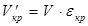
Этот объем должен быть заполнен песком:
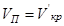
Объем пустот песка при коэффициенте пустотности εп составит
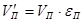
Естественно, что этот объем должен быть заполнен цементным тестом:
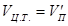
Умножив объем заполнителей на их объемные массы в насыпном состоянии, получим массы материалов:
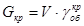
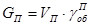
Умножив значение удельных поверхностей заполнителей на их соответствующие массы, получим поверхности заполнителей:
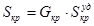
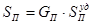
Общая поверхность заполнителей
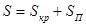
должна быть покрыта пленкой цементного теста толщиной 10 мкм.
Тогда расход цементного теста, необходимого для обволакивания зерен заполнителей, составит
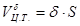
Объем цементного теста для заполнения пор песка и обволакивания зерен заполнителей будет равен
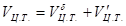
Задавшись значением В/Ц, определим расход цемента для приготовления необходимого объема цементного теста:
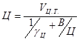
Сложив полученные объемы материалов, получим, что суммарный объем несколько превышает 1 м3. Тогда, разделив массы материалов на объем бетонной смеси c избытком, получим расход материалов для приготовления 1 м3 бетона, т.е.
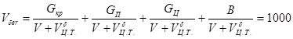
Пример расчета. Для приготовления бетона приняты материалы со следующими характеристиками:
плотность, г/cм3:
цемента γц.......................... 3,0
щебня γщ............................. 2,68
песка γп............................... 2,60
Объемная масса в насыпном состоянии, г/см3:
щебня 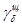
песка 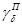
Удельная поверхность, см2/г:
щебня Sщ............................ 5
песка Sп.............................. 80
Пористость:
щебня 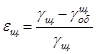
песка 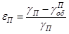
Толщина пленки цементного теста δ, обволакивающей зерна заполнителей, принимается равной 10 мкм, или 0,001 см.
Итак, если щебень занимает объем V =1 м3, то объем его пустот составит:
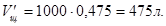
Этот объем должен быть заполнен песком:
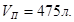
Объем пустот песка
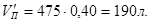
должен быть заполнен цементным тестом.
Таким образом, объем цементного теста будет равен
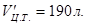
По имеющимся объемам и объемным массам определим их расход:
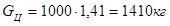
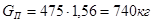
Общая поверхность заполнителей составит
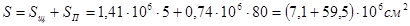
Тогда объем цементного теста, обволакивающего зерна заполнителей, будет равен
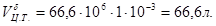
Общий объем цементного теста
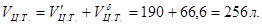
Определим в первом приближении водоцементное отношение. Принимаем, что марка используемого цемента М 400 (ГОСТ 10178-85), а марка бетона в возрасте 180 сут должна составить 300. Тогда прочность в возрасте 28 сут составит*
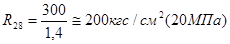
Водоцементное отношение определим по формуле НИИЖБ**:
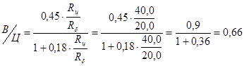
*Указания по подбору составов гидротехнического бетона. - М.-Л.: Госэнергоиздат, 1963.
**Водоцементное
отношение может быть также определено по формуле ВНИИЖелезобетона: 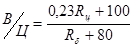
Тогда расход цемента составит:
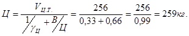
Расход воды:
В = 259×0,66 = 171 л.
Для определения расхода материалов на приготовление 1 м3 бетонной смеси определяем общий объем бетонной смеси:
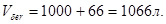
Проверяем по абсолютным объемам:
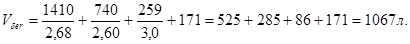
Расход материалов на приготовление 1 м3 бетонной смеси (бетон марки 300 в возрасте 180 сут) при марке цемента М 400 (ГОСТ 10178-85) составит (в кг):
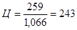
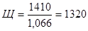
;
;
Объемная масса бетонной смеси 2418 кг.
Приведенный расчет показывает, что содержание цемента в бетоне лимитируется пустотностью смеси заполнителей и будет находиться в пределах 300 кг на 1 м3 бетона. Поэтому для получения нужной марки бетона лучше всего использовать цементы различных марок или изменять В/Ц.
Полевой состав бетонной смеси рассчитывается с учетом влажности заполнителей. При этом для сохранения вычисленного В/Ц и заданной прочности бетона необходимо расход воды, полученный при расчете, уменьшить на количество воды, содержащейся в заполнителях, а сухие песок и крупный заполнитель заменить влажными.
Предположим, что влажность песка 3 %, а щебня 1 %, тогда количество воды
в песке
в щебне 
Общее количество воды составит
Производственный состав бетонной смеси на 1 м3 будет следующий (в кг):
цемента - 243;
воды 160-34=126;
песка 695+21=716;
щебня 1320+13=1333
Всего... 2418
Таким образом, объемная масса бетонной смеси не изменяется.
При введении в бетонную смесь воздухововлекающих добавок расход материала следует определять с учетом вовлеченного в смесь воздуха.
Обычно содержание вовлеченного воздуха при введении добавок колеблется от 3 до 5 %. Примем содержание воздуха равным 4 %, тогда его объем в суммарном объеме бетонной смеси составит
Общий объем смеси будет равным
Расход материалов для приготовления 1 м3 бетонной смеси при введении воздухововлекающих добавок составит (в кг):
Проверим значение Vбет по абсолютным объемам:
Следовательно, при полученных расходах бетонная смесь занимает объем 1 м3.
Объемная масса бетона будет равна 2323 вместо 2418 кг, т.е. при введении воздухововлекающих добавок его объемная масса несколько уменьшается.
Приложение 4
Рекомендуемое
ОПРЕДЕЛЕНИЕ УДЕЛЬНОЙ ПОВЕРХНОСТИ ПЕСКА
Удельная поверхность песка определяется согласно ГОСТ 8735-75. В случае отсутствия прибора удельная поверхность может быть приближенно определена по табл. 1 на основании данных гранулометрического состава.
Пример расчета. Удельная поверхность речного песка, определенная согласно ГОСТ 8735-75, составляет 77 cм2/г. Имея гранулометрический состав песка, определим поверхность каждой фракции путем умножения процентного содержания фракции на ее удельную поверхность (табл. 1). Сложив полученные результаты и разделив сумму на 100, получим удельную поверхность песка.
Таблица 1
Расчет удельной поверхности песка
|
Содержание фракций, % |
Удельная поверхность фракций (по табл. 2), cм2/г |
Поверхность фракций (графа 2 · графа 3), см2 |
Удельная поверхность песка , см2/г |
|
|
5-2,5 |
3,7 |
9,4 |
35 |
|
|
2,5-1,2 |
9,8 |
20,2 |
198 |
|
|
1,2-0,6 |
41,6 |
37,0 |
1540 |
|
|
0,6-0,3 |
25,2 |
72,0 |
1810 |
|
|
0,3,14 |
13,5 |
141,0 |
1900 |
|
|
0,14 |
6,2 |
293,0 |
1820 |
|
|
∑=7303 |
Таким образом, удельная поверхность, определенная расчетным путем, близка полученной по ГОСТ 8735-75.
Аналогично определяют удельную поверхность крупного заполнителя.